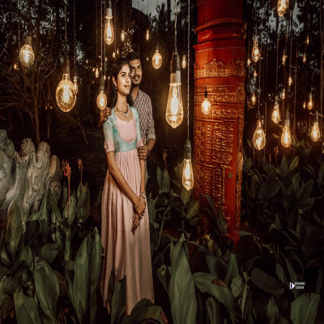

WC
Home
About
Gallery
Our Services
Contact
Our Services
Home
Our Services
Wedding photos & Videos
Wedding photography and videos capture the joy, emotions, and key moments of a couple's special day, preserving memories forever.
Candit Photos & Videos
Candid photography and videos capture spontaneous, natural moments, showcasing genuine emotions and interactions without posed or staged elements.
Baby Shower Photography
Baby shower photography captures the joy, rituals, and celebrations of expecting parents, focusing on special moments with family and friends.
New Born Baby Photography
Newborn baby photography captures the innocence and delicate features of a newborn, creating precious memories of their earliest days.
Ear Piercing & Mundan Ceremony Photography
Ear piercing and Mundan ceremony photography captures the traditional rituals, emotions, and cultural significance of these important childhood milestones.
Naming Cerymony & Birthday Party Photography
Naming ceremony and birthday party photography captures the joy, rituals, and celebrations of a child’s milestones, preserving cherished family memories.
Puberty Ceremony Photography
Puberty ceremony photography documents the cultural and emotional significance of a girl's coming-of-age, capturing traditional rituals and family celebrations.
Pre Wedding & post Wedding Shoot
Pre-wedding and post-wedding shoot photography captures romantic moments and special memories before and after the wedding day, enhancing the overall experience.
Street Photography
Street photography captures everyday life, spontaneous moments, and candid interactions in public spaces, revealing the essence of urban life.
Festival Photography
Festival photography captures vibrant celebrations, cultural traditions, and community gatherings, showcasing the joy and spirit of diverse festivals.
Follow Instagram
@weddingcolorswc
Wedding Colors
Wedding Colors
Wedding Colors
Wedding Colors

Wedding Colors
Wedding Colors
Wedding Colors
Wedding Colors
Wedding Colors
Wedding Colors
Wedding Colors